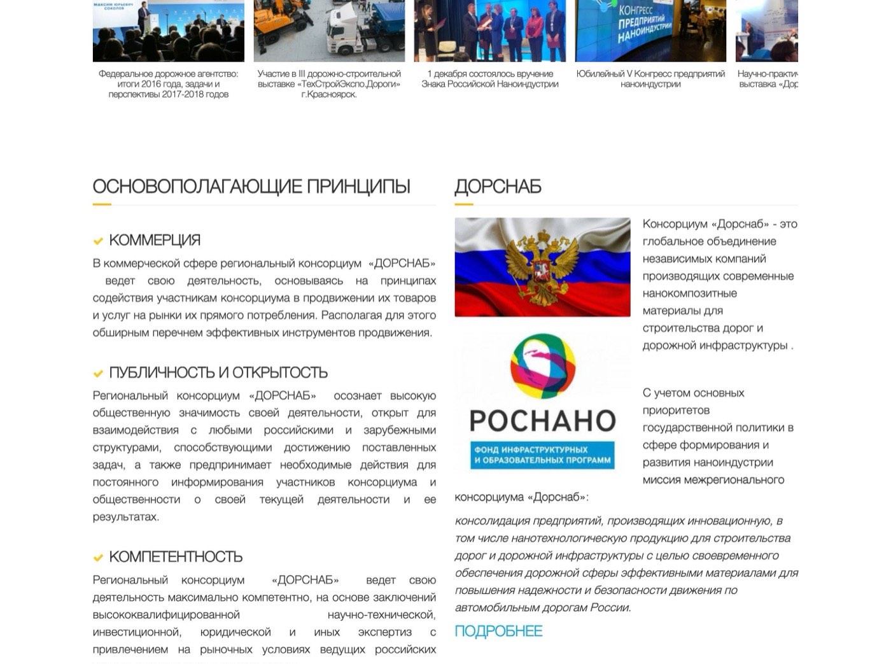
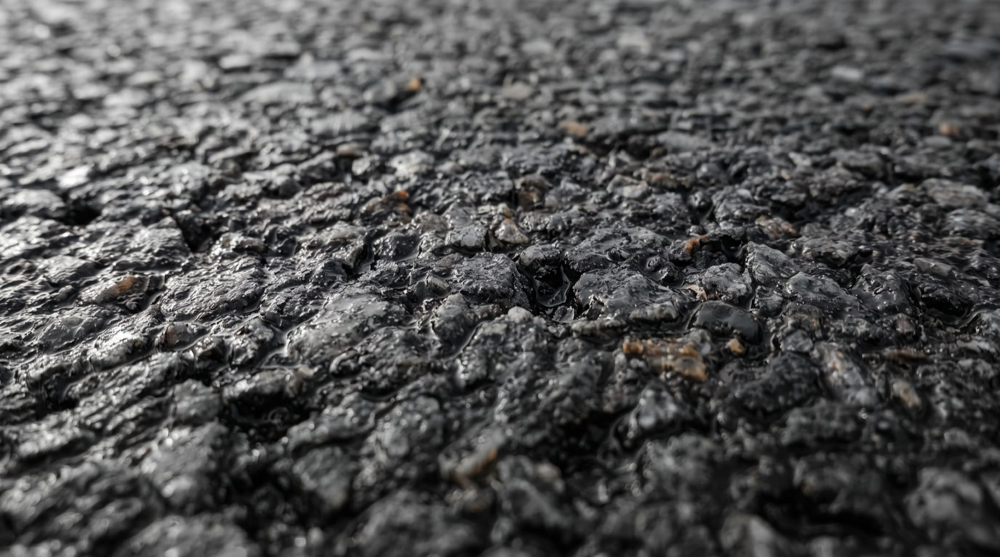
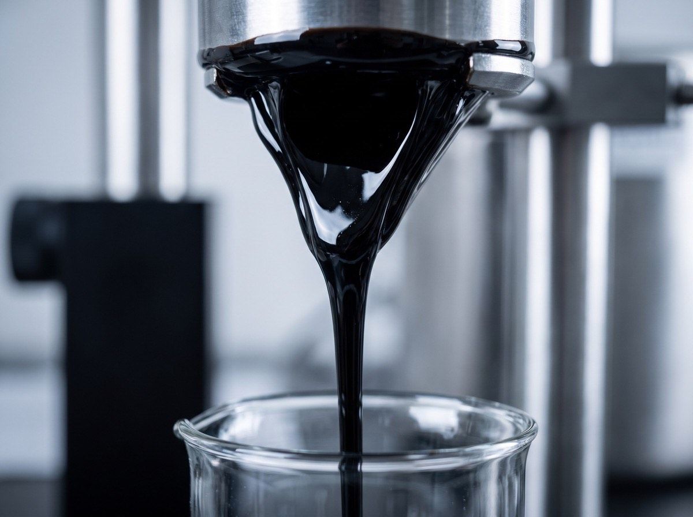
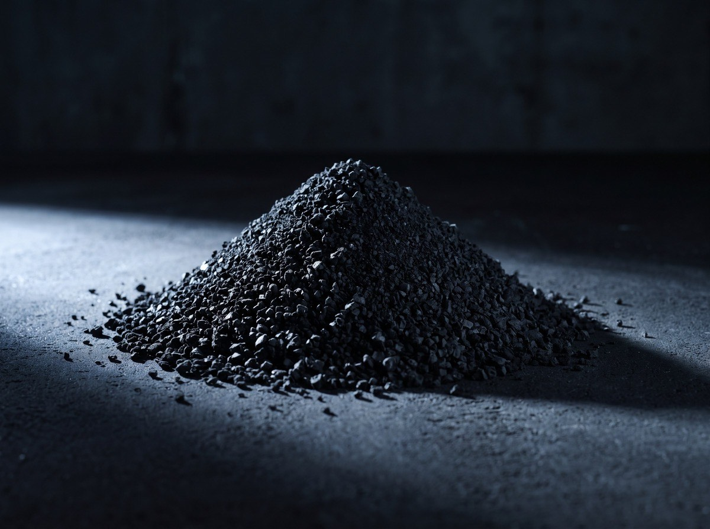
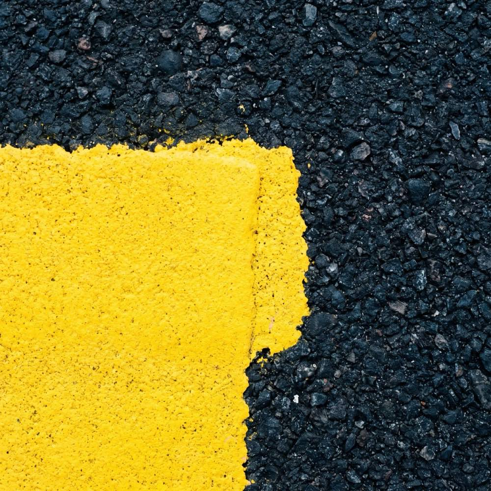
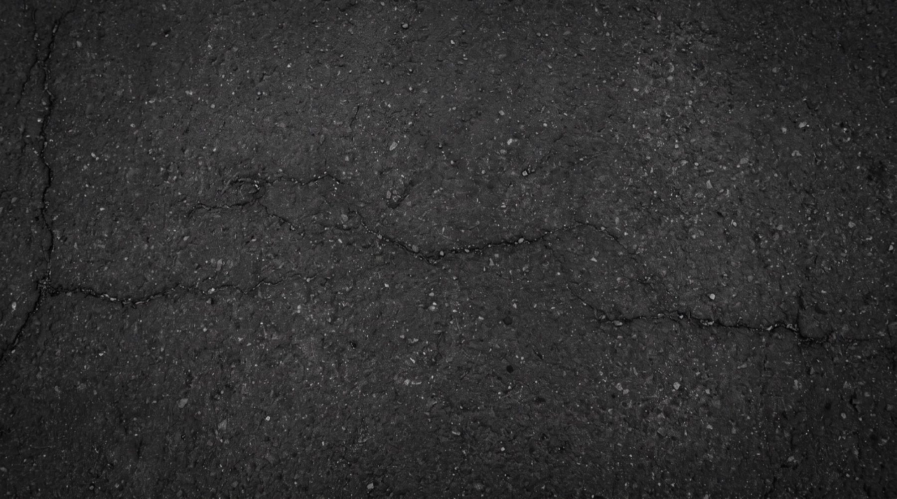
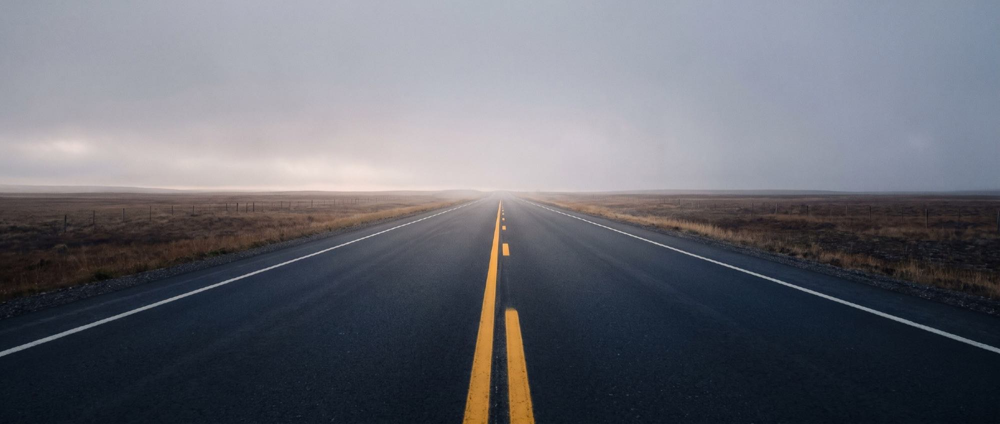

01 · Как есть сейчас
Так выглядит первый экран сайта сегодня
Так эту страницу видит каждый, кто заходит на dor-snab.com.

При последнем редактировании текст вставили с кавычками-ёлочками вместо программных. Браузер перестал понимать эти куски как команды и теперь печатает их как есть. Таких мест я насчитал около тридцати.
02 · Что ещё видно сразу
Дальше не лучше
Браузер пишет «не защищено»
У сайта нет защищённого соединения. Проверяли напрямую: порт, через который работает защита, не отвечает вообще. Данные из формы обратной связи идут открытым текстом.
Последняя новость - 2017 год
Самая поздняя новость - июль 2017 года. Внизу каждой страницы стоит «© 2015–2018».
Английская версия не переведена
Меню переключается на английский, а содержание остаётся русским и вперемешку с программным кодом.
Всё это я проверил сам 23 августа 2026 года, прямо на сайте.
03 · Что это стоит компании
Кто на самом деле открывает dor-snab.com
Поставку никто не закажет прямо с сайта. Но перед тем как выйти на разговор, компанию обязательно проверяют, и начинают с сайта.
- 01Снабженец подрядчика: ему назвали ваш материал, он проверяет
- 02Инженер в поиске замены импортной добавке
- 03Компания, которая думает, входить ли в консорциум
- 04Иностранный партнёр, ради него и делалась английская версия
- 05Профильное ведомство перед выставкой или конференцией
По сайту вам ничего не закажут. А вот вычеркнуть вас из короткого списка по нему могут, и вы об этом не узнаете.
04 · Первые секунды
Что он успевает понять за первые секунды
Сегодня он видит
- Программный код в главном блоке
- Предупреждение браузера о незащищённом соединении
- Новости девятилетней давности
- Копирайт 2018 года
Дальше он не листает: компания выглядит закрывшейся.
Должен видеть
- Что вы производите и подо что это берут
- Сертификаты, не отходя от описания
- Объекты, где материал уже лежит
- Живой человек с телефоном и сроком ответа
Дальше он читает: с этими можно работать.
Речь не про красоту. Вопрос в том, наберёт человек ваш номер или закроет вкладку.

05 · Что у вас есть
АДМ: то, о чём сайт почти не говорит
Активный дорожный модификатор меняет свойства битума: снижает температуру хрупкости, повышает пластичность. Смесь не расслаивается при перевозке и не требует стабилизирующей добавки на основе целлюлозы.
И отдельно то, что сейчас стоит последним абзацем в самом низу страницы:
Модификатор делают из отработанных автопокрышек
Сжигать вредно, закапывать бессмысленно: покрышка разлагается больше ста лет. Переработка в модификатор - вариант, при котором она уходит в дело.


Про переработку покрышек надо говорить на первом экране. Тема на слуху, под неё идут отдельные государственные программы, а у вас она лежит в самом низу страницы, под описанием состава.
06 · Подтверждения
Подтверждения, которые никто не видит
Сейчас часть этого лежит ссылками на скачивание внутри одной страницы, часть - логотипами в подвале без подписей. Для снабженца, который решает, стоит ли с вами вообще связываться, это и есть главный аргумент. Сейчас его надо искать.

07 · Пробелы
Чего на сайте нет вообще
- 01На каких объектах материал уже применялся
- 02Сколько экономит подрядчику против обычного решения
- 03Как получить техническую консультацию и с кем говорить
- 04Какие условия поставки и от какого объёма отгружают
- 05Как войти в консорциум новому участнику
Эти вопросы задают до звонка, а не на звонке. Ответов нет - значит звонить не о чем, и человек идёт к следующему поставщику.

08 · Решение
Каким станет сайт
Четыре блока ниже - это четыре проблемы из первой половины, закрытые.
Кто вы и зачем вы мне
Человек сразу видит, что производит консорциум, для каких задач и с какими подтверждениями. Без абзаца про миссию и динамично развивающуюся компанию. Плюс защищённое соединение и нормальная работа с телефона.
Инженер получает ответ на странице
Отдельная страница под каждый материал: какую задачу решает, характеристики таблицей, выгода против привычного решения, сертификаты рядом с описанием, запрос технической консультации в один клик. А не письмо через три дня.
Всё в одном месте
Сертификаты, техрегламенты и паспорта продукции собраны вместе, открываются в один клик и скачиваются одним файлом. Сейчас, чтобы их найти, нужно знать, на какой странице искать.
Полный перевод, а не только меню
Переведено содержание целиком, с отдельными формулировками под зарубежного партнёра: сертификация, стандарты, условия поставки.
09 · Форматы работы
Три формата, разный объём работ
Дешевле не значит хуже сделано. Разница в объёме: сколько страниц и как далеко идём по задачам. Технические проблемы, о которых шла речь выше, закрывает любой из трёх.
Сайт под переговоры и экспорт
$7 000
Когда впереди новые участники, инвестиции или выход за границу
Всё из среднего формата, плюс:
- Карта объектов, где материал уже применялся
- Кейсы с результатами и цифрами
- Отдельный раздел про переработку покрышек и экологию
- Английская версия под зарубежного партнёра: стандарты, сертификация, условия поставки на их языке
- Три месяца сопровождения после запуска
Сайт, который приводит заявки
$5 500
Когда нужно, чтобы сайт приносил обращения, а не просто был
Всё из базового формата, плюс:
- Страницы материалов переделаны в рабочие: характеристики таблицей, выгода в цифрах, сертификаты рядом
- Все сертификаты и техрегламенты выложены и доступны в один клик
- Заявки и запросы собираются в одно место, ни один не теряется
- Страницы собраны под отраслевые запросы, чтобы вас находили поиском
Починить и переписать
$4 000
Когда надо закрыть вопрос и больше к нему не возвращаться
- Новый сайт на современном движке вместо версии 2014 года
- Защищённое соединение
- Корректная работа на телефоне
- Восемь страниц как сейчас, но содержание переписано заново
- Английская версия, переведённая целиком, а не только меню
- Актуальные новости и год
Ваш личный сайт-визитка - отдельный проект, в эти суммы он не входит. Посчитаю его отдельно.
10 · Как работаем
Как идёт работа
Четыре этапа. От двух с половиной до четырёх недель, в зависимости от формата.
Согласование структуры
Разбираем, что должно быть на сайте и в каком порядке. Здесь же собираем материалы: тексты, фото объектов, документы.
Дизайн главной
Показываю первый экран и общий стиль до того, как собирается весь сайт. Здесь я на правки и рассчитываю: переделать один экран дешевле, чем весь сайт.
Сборка
Все страницы, содержание, английская версия.
Проверка и запуск
Скорость, телефон, формы, защищённое соединение, перенос на ваш адрес.
11 · Что нужно с вашей стороны
- -Доступ к домену dor-snab.com. Сам сайт остаётся работать до дня переключения
- -Материалы: фото объектов и производства, документы, актуальный список участников
- -Один человек, который принимает работу и утверждает макеты
- -Полчаса на созвон в начале и по полчаса на приёмку каждого этапа
12 · Условия
- -Предоплата 50%, остаток после запуска
- -Хостинг и домен на первый год входят в стоимость
- -Правки в рамках согласованной структуры не ограничены
- -Исходники и все доступы передаются вам, привязки ко мне нет

Ближайший шаг
Консорциум работает одиннадцать лет. Сайт об этом больше не говорит.
Продукт, который делают из старых покрышек и который меняет свойства дорожного покрытия, сейчас описан тремя абзацами на странице со сломанной разметкой. На то, чтобы это исправить, нужен месяц.
Выберите формат - и я соберу под него точный план: какие страницы, что нужно от вас и по каким дням что происходит. Если удобнее сначала обсудить голосом, скажите, когда вам позвонить.
Написать Маркуили ответьте прямо в переписке, где получили эту ссылку